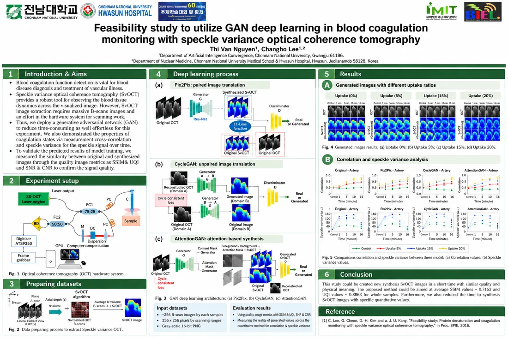
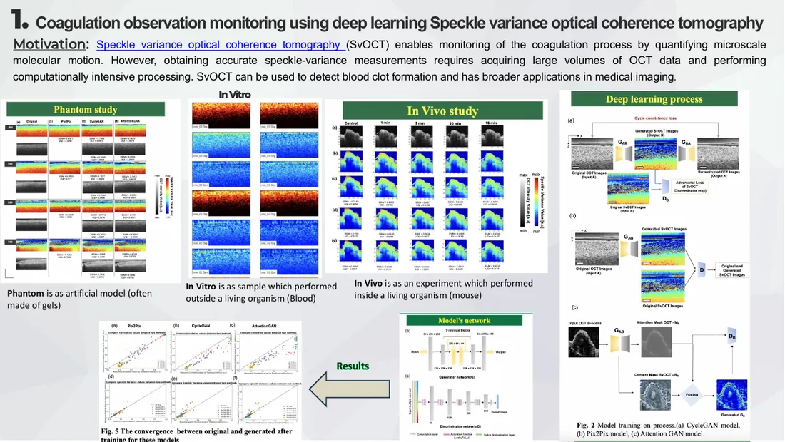
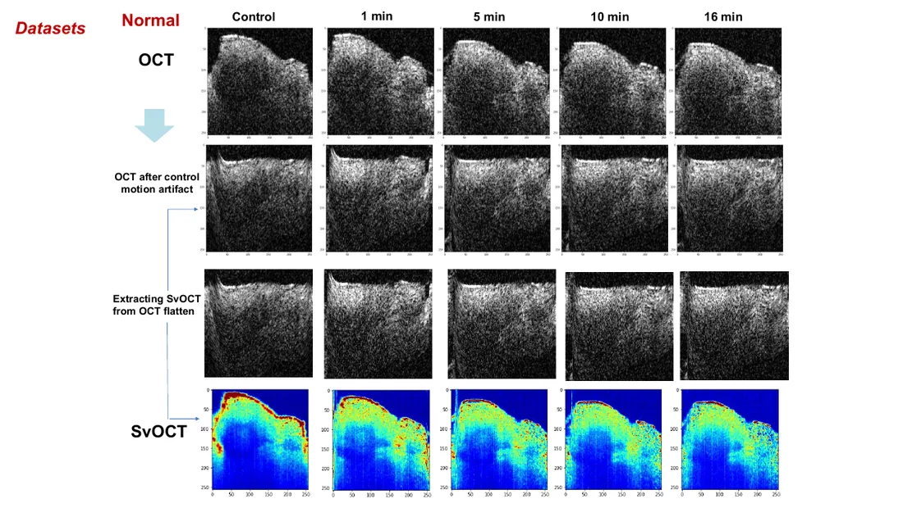
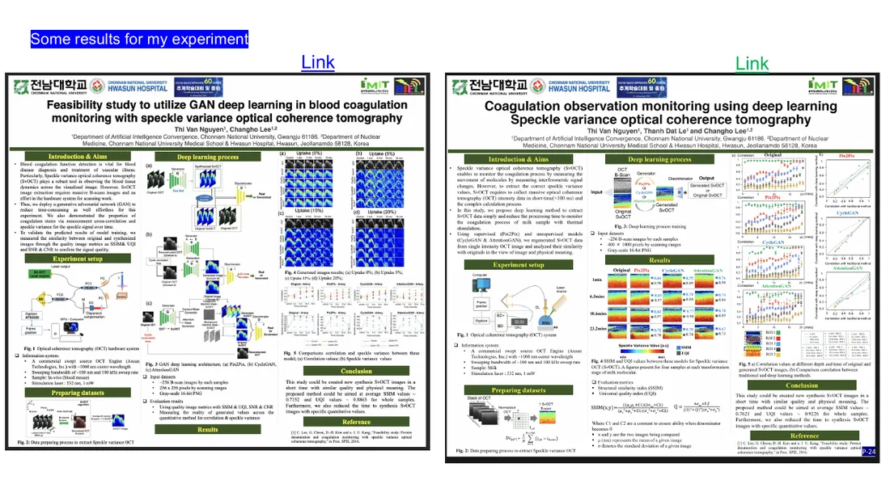

← All research
GAN-based coagulation monitoring with speckle-variance OCT
Image-to-image translation to synthesize speckle-variance OCT images for monitoring blood coagulation.
- Period
- 2021 – 2023
- Where
- BIEL Lab, Chonnam National University
- Results
- Average SSIM 0.7152, UQI 0.8863
The problem
Speckle-variance OCT (SvOCT) can show coagulation dynamics, but it needs large volumes of data and heavy processing. Learning-based synthesis could produce SvOCT-like images faster.
Approach
- Phantom, in-vitro and in-vivo acquisition of OCT data.
- Pix2Pix, CycleGAN and AttentionGAN trained to translate OCT into SvOCT images.
- Image quality measured with SSIM and UQI, plus correlation analysis of coagulation signals.

More figures



Talks
- Oral presentation, ARCCNM-KSNM Annual Meeting, South Korea.
- Poster, Korean Society of Medical & Biological Engineering.